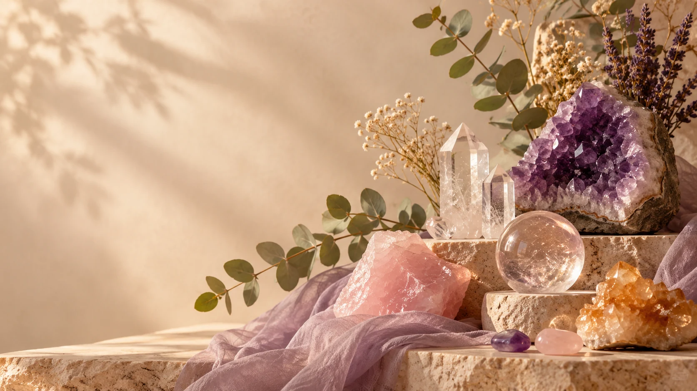

01 · Minerais
Cristais naturais
Peças minerais para coleção, contemplação, decoração ou para presentear. Fotos, variedades, dimensões e valores serão apresentados no catálogo de produtos.
Consultar cristais →Uma seleção dedicada à beleza dos minerais e às joias com cristais. Descubra peças, conheça suas características e consulte disponibilidade diretamente com a loja.
Consultar catálogo pelo WhatsApp
A loja tem navegação própria, separada dos agendamentos terapêuticos. Consulte as peças e confirme valores e disponibilidade pelo WhatsApp.
Peças minerais para coleção, contemplação, decoração ou para presentear. Fotos, variedades, dimensões e valores serão apresentados no catálogo de produtos.
Consultar cristais →Uma área dedicada às joias e acessórios com pedras naturais. Cada peça poderá ter descrição de materiais, medidas e cuidados.
Consultar joias →Espaço para conjuntos, sugestões de presente e combinações especiais de cristais e joias, conforme a seleção disponível.
Ver opções →ExploreConheça as categorias e consulte as peças disponíveis.
ConverseReceba fotos, detalhes, valores e informações de disponibilidade.
FinalizeCombine a forma de pagamento e entrega diretamente com a loja.
Fale com a loja para conhecer a seleção atual de cristais e joias.
Falar com a loja pelo WhatsApp